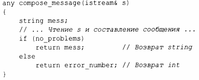
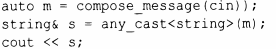

⇐13.5.2 optional 13.6 Аллокаторы⇒
any может содержать произвольный тип и при этом знает, какой тип (если таковой есть) он содержит. Это, по сути, неограниченная версия variant:
Когда вы присваиваете или инициализируете any значением, объект запоминает тип этого значения. Позже мы можем узнать, какой именно тип имеет значение any, и извлечь это значение. Например:
Если мы пытаемся получить доступ к any с хранимым типом, отличным от ожидаемого, генерируется исключение bad_any_access. Есть также способы доступа к any, которые не полагаются на исключения.